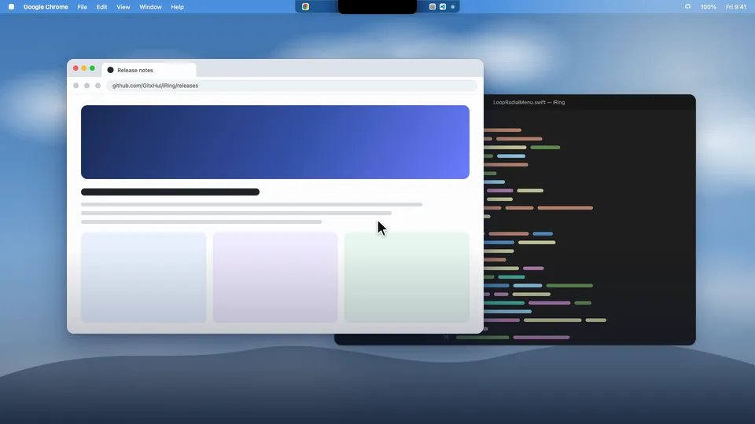
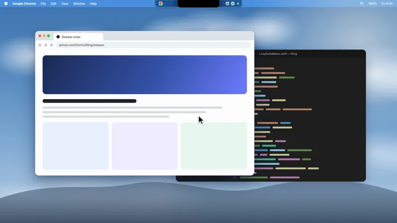

iRing for macOS · Beta 2iRing for macOS · Beta 2 公测
Your windows.
At your cursor.切换、分屏、缩放
就在光标处
Hold left Option to open the ring. Switch apps, preview a layout, or scroll to resize.按住左 ⌥ 呼出圆环。指向应用即可切换，按 Tab 进入分屏，双指滑动调整窗口大小。
Free beta · macOS 15+ · Apple silicon免费公测 · macOS 15 或更新版本 · Apple 芯片

Four ways to use iRingiRing 的四个用法
Use the ring for window actions and keep your favorite apps within reach in a Liquid Glass dock.用圆环管理窗口，把常用应用放进贴合屏幕边缘的 Liquid Glass 灵动岛。

See iRing in action看 iRing 怎么用
A 35-second look at the ring, window previews, and the edge dock.35 秒看完圆环切换、分屏预览和灵动岛。
Download the demo video下载演示视频The video has sound.视频含声音。
Install iRing安装 iRing
Requires macOS 15 or later on a Mac with Apple silicon.适用于运行 macOS 15 或更新版本的 Apple 芯片 Mac。
First launch首次打开
- Open the DMG and drag iRing to Applications.打开 DMG，把 iRing 拖到「应用程序」。
- Open iRing and allow it in System Settings → Privacy & Security → Accessibility.打开 iRing，前往「系统设置 → 隐私与安全性 → 辅助功能」启用 iRing。
If macOS blocks the beta如果 macOS 阻止打开 Beta
This build has not been notarized. Check the checksum and read the first-launch instructions on the release page.此版本尚未经过 Apple 公证。如首次打开受阻，请核对下载校验值，再按发布页的安装说明处理。
Homebrew
brew install --cask gitxhui/tap/iring
Installs the same Beta 2 build.安装的也是 Beta 2 版本。 View the tap查看 Tap